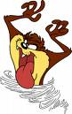

Tornado
 De: La Frikipedia, la enciclopedia extremadamente seria.
De: La Frikipedia, la enciclopedia extremadamente seria.
 Algunos animales pueden generar tornados
Esto es un tornado visto desde perspectiva "Divina".
Es la acción rotatoria de una cuchara invisible de Dios moviendo el aire (se aburre el chiquillo).
Los tornados suelen ser muy apacibles y simpáticos, suelen arrancarte la casa de cuajo (según que tipo de tornado) para limpiarla aunque estés contigo dentro, te hacen el papeleo de hacienda y las compras, pero la mayoría solo te mandan a tomar viento varios kms.
Tipos de tornados
Según la escala de Tornillo Franfurke, los tipos de tornado son:
- F1: Este lo crea Dios con el teclado pulsando F1. Este tornado, (por llamarlo de alguna manera) es relativamente delgausho y débil ante cánticos de Tamara.
- F2: Este lo crea Dios pulsando F2. Este tornado, ya es más agresivo, y te pega nada más verte, te roba el dinero, y te roba la ropa y te manda a tomar viento literalmente hablando.
- F3: El mismo proceso pero pulsando F3. Este tornado ya toma forma de cucurucho, es blanquecino, muy agresivo, con malas pulgas, te manda a tomar viento a tí, a tu coche, a tu familia, a mí, y tu casa también.
- F4: Igual que antes pero con F4. Esto ya se pasa de la raya... es un arma de matar, de Dios claro... su único punto débil es la Psicología Inversa Desproporcional. Es decir, le ofreces al tornado tu propia casa pero en proporciones derivadas de dicho establecimiento, o también puedes insultarle.
- F5: Igual pero F5. Este cacho de pedazo de trozo de gigantesco tornado está preparado para soportar los cantos de Tamara y los 4 mataos de OT, la bomba de Hiroshima x4 y tus insultos. Esté te lanza un rayo, te coje la casa, te la desordena, después la limpia, después la destruye, después la manda a China, y tú detrás.
Es de los más poderosos ya que la cuchara que utiliza Dios para crearlo (aparte del botoncito F5) es una cuchara sopera... algo descomunal...
- F6, F7, F8, F9, F10, F11, F12, Impr PetSis, Bloq despl., Pausa Inter: Todos estos son de menos importancia, suelen ser hipermegadestrucctivos, no solo mandan tu casa volando, a ti, y a tu ordena, no, sino que también manda volando media ciudad contigo, la parte más divertida es cuando caes y la ciudad encima tuya, son muy coquetos y juguetones.
A Dios le gusta jugar con los botoncitos esos, y lía unos marrones que te cagas, pero le da igual, solo somos unas marionetas para él.
Como evitar un tornado
Simplemente sal cagando leche en cuanto veas uno, ya que gracias al joistick divino de Dios puede controlar los tornados como si torbellinos en la taza de café se tratasen.
Métete en un sótano, pero si viene uno bien gordo, reza para que Dios no te haya visto... aunque ya sabes lo que dicen... ¡el lo ve todo! JAJA, ¿ya no podrás copular tranquilo eh?
Bueno, también se les puede dar una revista playboy para que se tranquilicen, y no dejes que se fusionen unos con otros, porque su poder destrucctivo, inteligencia, y poder psicodélico aumentaría...
Ingredientes para conseguir un tornado
- Una cazuela (con fabada asturiana) vacía.
- 26 gramos de leche divina.
- 5 gramos de electricidad magnética.
- Rayos Beta y Gamma al punto de sal.
- Un recipiente iónico.
- Unas cucharas cuánticas.
- A Dios en persona.
- Un lápiz borrador y una goma para escribir.
- Morcilla azul de la que cagó Navidull.
- Oro blanco de arcilla.
- La varita de Harry Petas.
- Un microprocesador pentium 7 -1/5.
- A Bill Gates.
- La botella cuántica Don Simon.
- 200 gramos de sal y azúcar junto con Neskuik de chocolate blanco.
- Un pedo de Wombat.
- Caldo de puchero utilizando a un Wombat homosexual.
- Un taperwer con lomo de Navidull de pata negra, etiqueta negra – de precio 765 €.
- La play3 desmontada bañada en oro.
- La mala leche de Dios.
- Una joven venezolana vírgen.
Todo esto, lo metes en una cazuela de 23 por 12 por 345 pulgadas de 7 lados, con profundidad de altura, y anchura modulada.
Una vez este todo hecho, lo pones a fuego lento, y pones ópera rock para que coja un gustirrín bueno. Cuando se haya acabado dicha acción, llevaté el potaje satánico que acabas de crear, en un día de tormenta, justo cuando caiga un rayo, se lo tiras, entomces sal corriendo tanto como puedas porque acabas de crear un monstruo imparable, para crear torbellinos lo mismo, pero en el agua a una
temperatura ambiente de 73 grados kelvin.
Autor(es):
- Nexo
- MURO DE AGUAS
- Frikiman
- Alex2610
- El Xarlie
- Azulejos
- Microdrive
- Rogalmar
- El príncipe de las tabernas
- Genericool
Frikipedia 2005-2016, Licencia
GFDL 1.2 - Extraído por FrikiLeaks